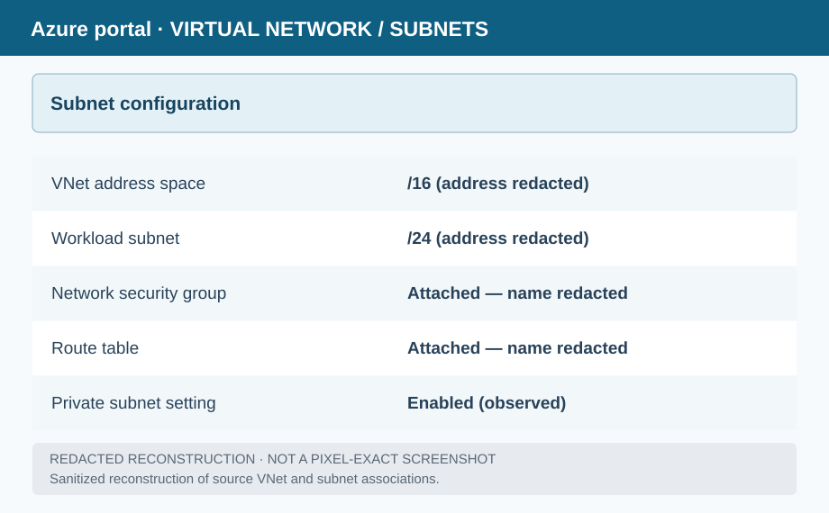

MAD HAT LABS / WEEK 05 / ORIGINAL LEARNING RECONSTRUCTION
Network Like an Operative
Follow how a workload can resolve a storage hostname and connect over a Private Endpoint while a default route points at a firewall appliance. Inspect each sanitized configuration illustration as the trace advances.
← Back to the Week 5 ticket reply
Training simulation — not live traffic. Addresses and names are deliberately withheld. The illustrations are redacted recreations, not original screenshots. DNS lookup precedes the data connection and is not a packet-forwarding hop.
Conceptual network flow
First: hostname lookup via linked private DNS → Then: data packet through security and routing controls
Selected for this destination:
More-specific /32 Private Endpoint system route
More-specific /32 Private Endpoint system route
Not selected for this destination:
0.0.0.0/0 UDR → virtual inspection appliance
0.0.0.0/0 UDR → virtual inspection appliance
Trace controller
Ready · 0/6
Ready to trace
Choose Send packet to animate the explanation, or Step to examine each stage.
Redacted configuration illustration

Click the illustration to open the larger view. All five evidence illustrations are explicitly reconstructed and omit precise values from the training tenant.
Configuration interpretation
Select a stage to see its supported observation and role in the path.
Trace log
- Idle · No packets simulated.